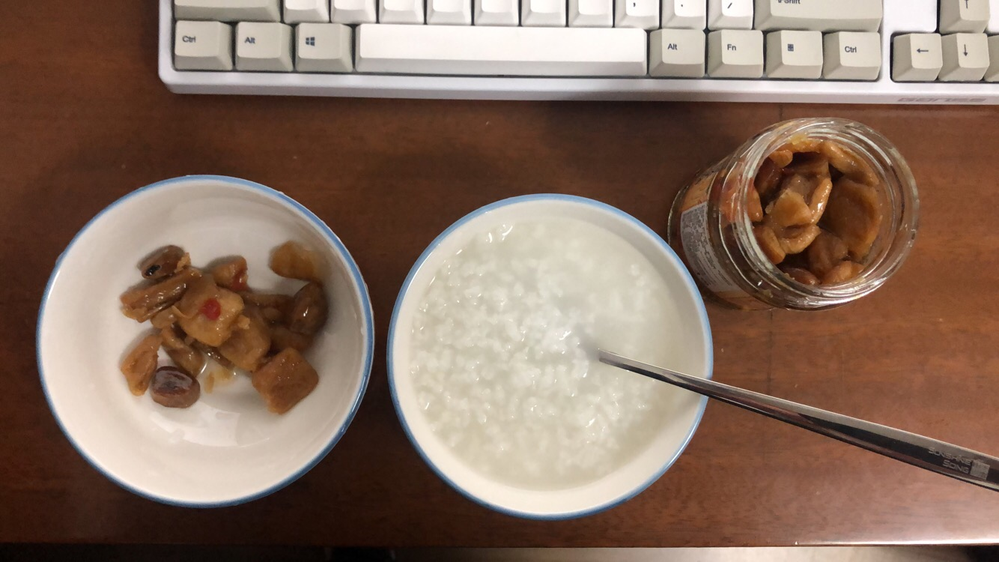

新的博客开始使用啦！
沉迷于写博客而从来没有认真写过博客的陈某又写了一个博客...
项目地址：GitHub · StaticBlog
好吧，其实还是有一点区别的，区别就在于我精心设计了整个框架，在废寝忘食地写了一整个晚上之后！带来了以下激动人心的特性！
- SEO
- 原先的博客在搜索引擎中完全不存在
- 这个博客等过两天被爬到之后，肯定是妥妥能够搜到的。
- 灵活性
- 原先的博客非常死板，只能使用预定义的一种样式，想要更改文章，还需要连接服务器，手动改数据库表
- 这个博客支持所有的样式！支持自定义页面 js ！可以超自由地改页面了呢！
- 性能
- 原先博客加载虽然不慢，但是应该比不上这个服务器条件甚至更差的博客（5 Mbps vs. 1 Mbps）
- 部署
- 原先的博客改动一下之后，需要重新打包、上传、杀掉旧进程、启动，非常麻烦
- 这个博客只需要轻轻地运行写好的部署脚本，就完成更新了！
- 轻量级
- 原先的博客使用了express、angular
- 这个博客没有使用任何框架，自己所写的框架代码不超过50行！
那么是怎么实现的呢！
！
其实就是全部都是静态文件啦……
……
（这个博客见证了陈某的技术退步）
今天下午动手重新写一个博客的时候，就已经决定做成静态的了，因为我自己的博客，其实也不需要搞得很复杂，不需要用到什么前端框架，不需要有多少易用性。在尝试用spring
boot配置资源链接到外部文件夹，又写了个上传文件的接口，突然发现，所有这些直接用nginx指定到一个文件夹，然后写个固定的shell，把本机某个文件夹上传到那个文件夹就好了…
所以虽然整个架构很简陋，但是写博客还是很轻松的，在这个项目里，需要新增博文的时候，只需要：
- 在 dev 文件夹下的 input.md 里写下文章
- 使用md2html.sh转换成html
- 新建文章文件夹，将html放入
- 使用 deploy.sh 上传到服务器
- done
这个博客对我来说的好处就在于：
- 自由：对每个页面的样式都可以事无巨细地定义，写相应的js脚本，在以后深入去学各种效果的时候会比较有用
- 简单：不想写样式的时候，就像这篇文章，只要引用预定义的样式就好了，也不算太难看。平时在bear上做的笔记，稍微整理一下就能发到博客上了。
有了这两点还图什么呐，就这样就好啦，这才是比较适合我的博客嘛（但是什么时候有正经写过文章…）
最后以一张今晚7点超饿的时候才开始煮、到9点多才吃到的晚饭结束 真的非常丰盛了:)
